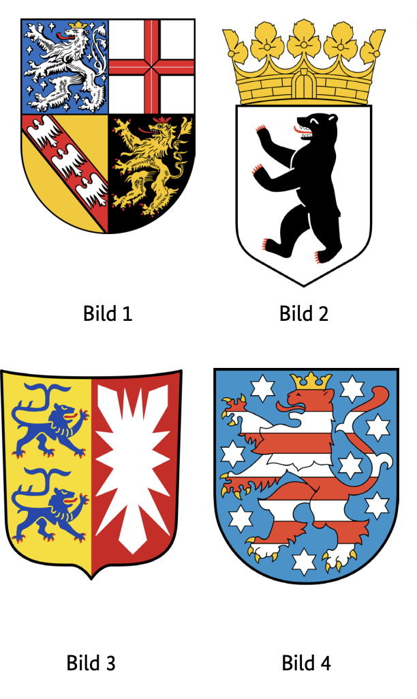
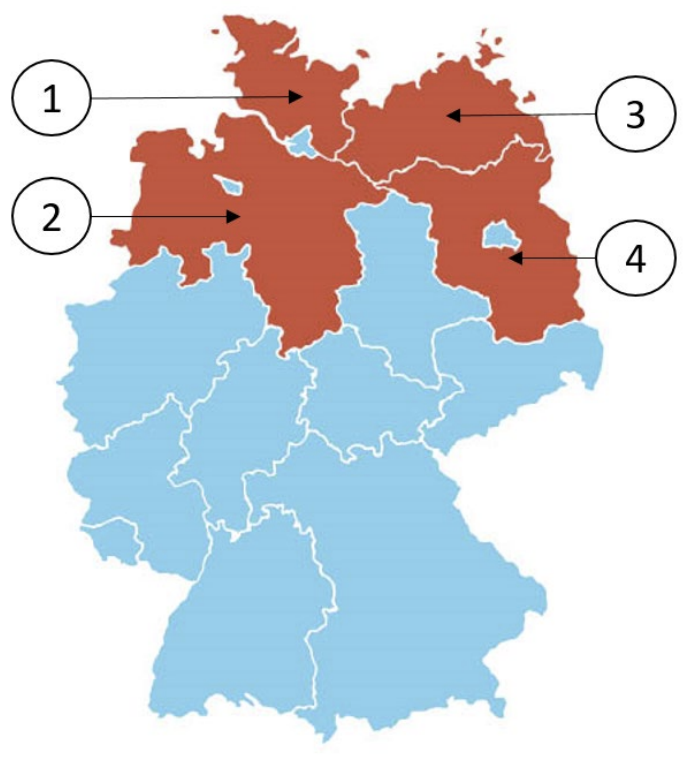

Resmi BAMF soru havuzundaki 10 Schleswig-Holstein (SH) eyalet sorusunun Almanca ve Türkçe açıklamalı interaktif çözümleri. Soru üzerine tıklayarak bilginizi anında test edin.
Almanya vatandaşlık ve kalıcı oturum için yapılan Leben in Deutschland (LiD) sınavında adaya toplam 33 çoktan seçmeli soru sorulur:
30 Genel Soru: Demokrasi, hukuk, tarih ve toplumsal yaşam (300 genel soru havuzundan).
3 Eyalet Sorusu: İkamet ettiğiniz eyalete özel tarih, coğrafya ve anayasa soruları (Aşağıdaki 10 eyalet sorusu havuzundan).
Sınavı geçmek için 33 sorudan en az 15 doğru (Vatandaşlık şartı) veya 17 doğru (Oryantasyon kursu başarı sertifikası) yapmanız gerekmektedir.
📝 10 Resmi Schleswig-Holstein Sorusunu Çözün
Soru #441 (1 / 10)Federal Eyalet: Schleswig-Holstein
Welches Wappen gehört zum Bundesland Schleswig-Holstein?
TR: Schleswig-Holstein federal eyaletine ait olan arma hangisi?

✅ Doğru Cevap: Şık C (Bild 3)
Bu soru, Almanya'da devlet armalarının tanınmasıyla ilgilidir. Size armaların birkaç numaralı görüntüsü gösterilecek. Göreviniz, tipik semboller ve renklere dayanarak Schleswig-Holstein devletine ait olan armayı belirlemektir. Schleswig-Holstein, tarihini ve konumunu gösteren tarihsel unsurlarla karakteristik bir armaya sahiptir. Bu amblemi doğru şekilde temsil eden numarayı seçin.
In dieser Frage geht es um die Erkennung von Landeswappen in Deutschland. Dir werden mehrere nummerierte Abbildungen von Wappen gezeigt. Deine Aufgabe ist es, anhand typischer Symbole und Farben das Wappen zu identifizieren, das zum Bundesland Schleswig-Holstein gehört. Schleswig-Holstein hat ein charakteristisches Wappen mit historischen Elementen, die auf seine Geschichte und Lage hinweisen. Wähle die Nummer aus, die dieses Wappen korrekt darstellt.
This question is about the recognition of state coats of arms in Germany. You will be shown several numbered images of coats of arms. Your task is to identify the coat of arms, which belongs to the state of Schleswig-Holstein, based on typical symbols and colors. Schleswig-Holstein has a characteristic coat of arms with historical elements that indicate its history and location. Select the number that correctly represents this emblem.
هذا السؤال يتعلق بالاعتراف بشعارات الدولة في ألمانيا. ستعرض لك عدة صور مرقمة لشعارات النبالة. مهمتك هي تحديد شعار النبالة، الذي ينتمي إلى ولاية شليسفيغ هولشتاين، بناء على الرموز والألوان النموذجية. تتمتع شليسفيغ-هولشتاين بشعار نبالة مميز مع عناصر تاريخية تشير إلى تاريخها وموقعها. اختر الرقم الذي يمثل هذا الشعار بشكل صحيح.
Це питання стосується визнання державних гербів у Німеччині. Вам покажуть кілька пронумерованих зображень гербів. Ваше завдання — визначити герб, який належить землі Шлезвіг-Гольштейн, на основі типових символів і кольорів. Шлезвіг-Гольштейн має характерний герб із історичними елементами, що вказують на його історію та розташування. Виберіть число, яке правильно відображає цю емблему.
Soru #442 (2 / 10)Federal Eyalet: Schleswig-Holstein
Welches ist ein Landkreis in Schleswig-Holstein?
TR: Schleswig-Holstein'de hangi bir ilçe var?
✅ Doğru Cevap: Şık C (Nordfriesland)
Almanya federal eyaletlere ayrılmış ve bunlar da bölgelere ayrılmıştır. Her bölge tam olarak bir federal eyalete aittir. Schleswig-Holstein, Almanya'nın kuzeyinde, Kuzey Denizi ile Baltık Denizi arasında yer almaktadır. Soru, bahsedilen bölgelerden hangilerinin Schleswig-Holstein'e ait olup olmadığını, hangilerinin Mecklenburg-Batı Pomeranya, Kuzey Ren-Vestfalya veya Aşağı Saksonya gibi diğer federal eyaletlere atanma olasılığının daha yüksek olup olmadığını inceliyor.
Deutschland ist in Bundesländer und diese wiederum in Landkreise eingeteilt. Jeder Landkreis gehört genau zu einem Bundesland. Schleswig-Holstein liegt im Norden Deutschlands zwischen Nord- und Ostsee. Die Frage prüft, ob man weiß, welcher der genannten Landkreise zu Schleswig-Holstein gehört und welche eher anderen Bundesländern wie Mecklenburg-Vorpommern, Nordrhein-Westfalen oder Niedersachsen zuzuordnen sind.
Germany is divided into federal states and these in turn are divided into districts. Each district belongs to exactly one federal state. Schleswig-Holstein is located in the north of Germany between the North Sea and the Baltic Sea. The question examines whether one knows which of the districts mentioned belongs to Schleswig-Holstein and which are more likely to be assigned to other federal states such as Mecklenburg-Western Pomerania, North Rhine-Westphalia or Lower Saxony.
تنقسم ألمانيا إلى ولايات اتحادية وهذه بدورها مقسمة إلى دوائر. كل دائرة تنتمي إلى ولاية اتحادية واحدة بالضبط. تقع شليسفيغ-هولشتاين في شمال ألمانيا بين بحر الشمال وبحر البلطيق. يفحص السؤال ما إذا كان المرء يعرف أي من الدوائر المذكورة تنتمي إلى شليسفيغ-هولشتاين وأيها من المرجح أن تسند إلى ولايات اتحادية أخرى مثل مكلنبورغ-بوميرانيا الغربية، شمال الراين-وستفاليا، أو ساكسونيا السفلى.
Німеччина поділена на федеральні землі, які у свою чергу поділяються на округи. Кожен округ належить рівно одній федеральній землі. Шлезвіг-Гольштейн розташований на півночі Німеччини між Північним і Балтійським морями. Питання вивчає, чи відомо, які з згаданих округів належать до Шлезвіг-Гольштейну, а які частіше належать до інших федеральних земель, таких як Мекленбург-Передня Померанія, Північний Рейн-Вестфалія або Нижня Саксонія.
Soru #443 (3 / 10)Federal Eyalet: Schleswig-Holstein
Für wie viele Jahre wird der Landtag in Schleswig-Holstein gewählt?
TR: Schleswig-Holstein'deki eyalet parlamentosu kaç yıl boyunca görev yapacak?
Seçildi?
✅ Doğru Cevap: Şık C (5)
Almanya'daki hayat için önemli bir soru
Wichtige Frage für das Leben in Deutschland
Important question for life in Germany
سؤال مهم للحياة في ألمانيا
Важливе питання для життя в Німеччині
Soru #444 (4 / 10)Federal Eyalet: Schleswig-Holstein
Ab welchem Alter darf man in Schleswig-Holstein bei Kommunalwahlen wählen?
TR: Hangi yaştan itibaren izin veriliyor
Yerel seçimlerde oy kullanmak mı?
✅ Doğru Cevap: Şık B (16)
Almanya'daki hayat için önemli bir soru
Wichtige Frage für das Leben in Deutschland
Important question for life in Germany
سؤال مهم للحياة في ألمانيا
Важливе питання для життя в Німеччині
Soru #445 (5 / 10)Federal Eyalet: Schleswig-Holstein
Welche Farben hat die Landesflagge von Schleswig-Holstein?
TR: Schleswig-Holstein devlet bayrağı hangi renklere sahip?
✅ Doğru Cevap: Şık B (blau-weiß-rot)
Aşağıdaki soru, ülkenin kuzeyinde bulunan bir Alman devletine atıfta bulunmaktadır. Doğru cevap vermek için, Alman ulusal bayrakları hakkında temel bilgi faydalı olacaktır. Her ülke bayrağının belirli renkleri vardır ve bunlar genellikle tarihsel veya kültürel öneme sahiptir. Soru, Schleswig-Holstein bayrağına resmi olarak hangi renklerin ait olduğunu bilip bilmediğinizi kontrol eder.
Die folgende Frage bezieht sich auf ein deutsches Bundesland im Norden des Landes. Um sie richtig zu beantworten, sind Grundkenntnisse über deutsche Landesflaggen hilfreich. Jede Landesflagge hat bestimmte Farben, die oft historische oder kulturelle Bedeutung haben. Die Frage prüft, ob man weiß, welche Farben offiziell zur Flagge von Schleswig-Holstein gehören.
The following question refers to a German state in the north of the country. In order to answer them correctly, basic knowledge of German national flags is helpful. Each country flag has certain colors, which often have historical or cultural significance. The question checks whether you know which colors officially belong to the flag of Schleswig-Holstein.
السؤال التالي يشير إلى ولاية ألمانية في شمال البلاد. للإجابة عليها بشكل صحيح، فإن المعرفة الأساسية بالأعلام الوطنية الألمانية مفيدة. لكل علم دولة ألوان معينة، وغالبا ما تحمل أهمية تاريخية أو ثقافية. السؤال يتحقق مما إذا كنت تعرف أي الألوان تنتمي رسميا إلى علم شليسفيغ هولشتاين.
Наступне питання стосується німецької держави на півночі країни. Щоб правильно відповісти, корисно мати базові знання німецьких національних прапорів. Кожен прапор країни має певні кольори, які часто мають історичне або культурне значення. Питання перевіряє, чи знаєте ви, які кольори офіційно належать прапору Шлезвіг-Гольштейну.
Soru #446 (6 / 10)Federal Eyalet: Schleswig-Holstein
Wo können Sie sich in Schleswig-Holstein über politische Themen informieren?
TR: Schleswig-Holstein'deki siyasi konuları nereden öğrenebilirsiniz?
Konuları bilgilendirmek mi?
✅ Doğru Cevap: Şık C (beim / bei der Landesbeauftragten für politische Bildung)
Almanya'daki hayat için önemli bir soru
Wichtige Frage für das Leben in Deutschland
Important question for life in Germany
سؤال مهم للحياة في ألمانيا
Важливе питання для життя в Німеччині
Soru #447 (7 / 10)Federal Eyalet: Schleswig-Holstein
Die Landeshauptstadt von Schleswig-Holstein heißt …
TR: Schleswig-Holstein eyalet başkenti ...
✅ Doğru Cevap: Şık D (Kiel)
Almanya, farklı federal eyaletlerden oluşur ve her birinin kendi eyalet başkenti vardır; hükümet ve idarenin merkezi burada bulunur. Schleswig-Holstein, Almanya'nın kuzeyinde, Kuzey Denizi ile Baltık Denizi arasında yer almaktadır. Aşağıdaki soru, bu eyaletin siyasi başkenti olan şehrin temel coğrafi bilgisini test eder.
Deutschland besteht aus verschiedenen Bundesländern, und jedes hat eine eigene Landeshauptstadt, in der Regierung und Verwaltung ihren Sitz haben. Schleswig-Holstein liegt im Norden Deutschlands zwischen Nord- und Ostsee. Die folgende Frage prüft das grundlegende geografische Wissen darüber, welche Stadt die politische Hauptstadt dieses Bundeslandes ist.
Germany consists of different federal states, and each has its own state capital, in which the government and administration have their seat. Schleswig-Holstein is located in the north of Germany between the North Sea and the Baltic Sea. The following question tests the basic geographical knowledge of which city is the political capital of this state.
تتكون ألمانيا من ولايات اتحادية مختلفة، ولكل منها عاصمة ولاية خاصة بها، حيث تتخذ الحكومة والإدارة. تقع شليسفيغ-هولشتاين في شمال ألمانيا بين بحر الشمال وبحر البلطيق. السؤال التالي يختبر المعرفة الجغرافية الأساسية بأي مدينة هي العاصمة السياسية لهذه الولاية.
Німеччина складається з різних федеральних земель, кожна з яких має власну столицю, у якій розташовані уряд і адміністрація. Шлезвіг-Гольштейн розташований на півночі Німеччини між Північним і Балтійським морями. Наступне питання перевіряє базові географічні знання про те, яке місто є політичною столицею цього штату.
Soru #448 (8 / 10)Federal Eyalet: Schleswig-Holstein
Welches Bundesland ist Schleswig-Holstein?
TR: Schleswig-Holstein hangi federal eyalet?

✅ Doğru Cevap: Şık A (1)
Bu görev, Alman federal eyaletlerinin coğrafi sınıflandırılmasıyla ilgilidir. Bir illüstrasyon veya haritada, birkaç bölge 1'den 4'e kadar numaralarla işaretlenmiştir. Bu işaretlenmiş bölgelerden hangisinin Schleswig-Holstein eyaletini temsil ettiğini fark etmelisiniz. Schleswig-Holstein, Almanya'nın kuzeyinde, Kuzey Denizi ile Baltık Denizi arasında yer almakta olup Danimarka ile sınır komşusudur. O bölgeye karşılık gelen numarayı seçin.
In dieser Aufgabe geht es um die geografische Einordnung deutscher Bundesländer. Auf einer Abbildung oder Karte sind mehrere Regionen mit den Zahlen 1 bis 4 markiert. Du sollst erkennen, welche dieser markierten Regionen das Bundesland Schleswig-Holstein darstellt. Schleswig-Holstein liegt im Norden Deutschlands zwischen der Nordsee und der Ostsee und grenzt an Dänemark. Wähle die Zahl aus, die dieser Region entspricht.
This task is about the geographical classification of German federal states. On an illustration or map, several regions are marked with the numbers 1 to 4. You should recognize which of these marked regions represents the state of Schleswig-Holstein. Schleswig-Holstein is located in the north of Germany between the North Sea and the Baltic Sea and borders Denmark. Select the number that corresponds to that region.
تتعلق هذه المهمة بالتصنيف الجغرافي للولايات الفيدرالية الألمانية. في رسم توضيحي أو خريطة، يتم تمييز عدة مناطق بالأرقام من 1 إلى 4. يجب أن تتعرف على أي من هذه المناطق المعلمة تمثل ولاية شليسفيغ-هولشتاين. تقع شليسفيغ-هولشتاين في شمال ألمانيا بين بحر الشمال وبحر البلطيق وتحدها الدنمارك. اختر الرقم الذي يتوافق مع تلك المنطقة.
Це завдання стосується географічної класифікації німецьких федеральних земель. На ілюстрації або карті кілька регіонів позначені числами від 1 до 4. Слід визначити, який із цих позначених регіонів представляє землю Шлезвіг-Гольштейн. Шлезвіг-Гольштейн розташований на півночі Німеччини між Північним і Балтійським морями та межує з Данією. Виберіть число, що відповідає цій області.
Soru #449 (9 / 10)Federal Eyalet: Schleswig-Holstein
Wie nennt man die Regierungschefin / den Regierungschef in Schleswig-Holstein?
TR: Hükümet başkanına ne diyorsunuz?
Schleswig-Holstein mi?
✅ Doğru Cevap: Şık D (Ministerpräsidentin / Ministerpräsident)
Almanya'daki hayat için önemli bir soru
Wichtige Frage für das Leben in Deutschland
Important question for life in Germany
سؤال مهم للحياة في ألمانيا
Важливе питання для життя в Німеччині
Soru #450 (10 / 10)Federal Eyalet: Schleswig-Holstein
Welche Ministerin / welchen Minister hat Schleswig-Holstein nicht?
TR: Schleswig-Holstein'in hangi bakanı var?
Değil mi?
✅ Doğru Cevap: Şık B (Außenministerin / Außenminister)
Almanya'daki hayat için önemli bir soru
Wichtige Frage für das Leben in Deutschland
Important question for life in Germany
سؤال مهم للحياة في ألمانيا
Важливе питання для життя в Німеччині
300 Genel Soruyu ve Eyalet Sorularını Eksiksiz Çalışın
DeutschLernen LiD Trainer'da tüm 310 soruyu 5 farklı dilde (Türkçe, İngilizce, Arapça, Ukraynaca, Almanca) çözebilir, deneme sınavı simülasyonu yapabilirsiniz.